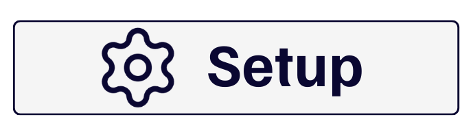
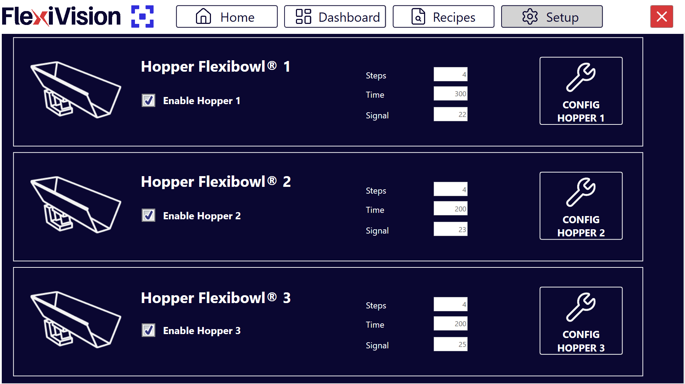
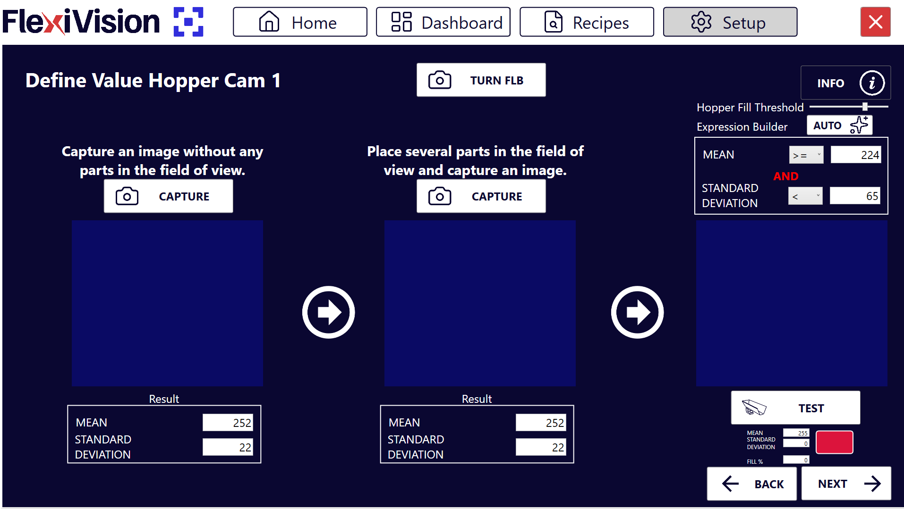

Configurazione della Tramoggia (Hopper)#
La configurazione della tramoggia permette di gestire il rifornimento automatico dei componenti sul disco del FlexiBowl®. Il sistema utilizza la visione per determinare quando il livello di riempimento è insufficiente e attivare la tramoggia.
Step 1: Accesso alla Configurazione#
Cliccare sulla sezione  |
|
Dalla sezione Hopper Setup, è possibile visualizzare e gestire le unità di carico collegate. Pagina Hopper Setup |
|
Selezionare la casella Enable Hopper X per attivare la tramoggia corrispondente. |
|
Cliccare sul pulsante Config Hopper X per accedere alla configurazione specifica |
Step 2: Definizione dell’Area di Controllo#
In questa fase si definisce la porzione di disco che la telecamera deve monitorare per lo scarico.
Modificare il riquadro blu a schermo per inquadrare l’area in cui verranno rilevati i componenti. Strumenti di supporto:
|
Step 3: Definizione dei Valori di Soglia#
Cliccare per accedere alla pagina Define Value Hopper Cam, dove si istruisce il sistema a distinguere tra disco vuoto e disco pieno. Pagina Define Value Hopper Cam |
|
Rimuovere tutti i componenti dall’area di visione e cliccare sul primo pulsante CAPTURE. |
|
Posizionare il numero minimo di componenti che si desidera mantenere in area di visione. Se il numero scende sotto questa soglia, la tramoggia si attiverà. |
|
Cliccare sul secondo pulsante CAPTURE. |
|
Cliccando su |
|
Rimuovere alcuni pezzi e cliccare su |
|
Osservare l’indicatore risultato:
|
 nell’Expression Builder, il sistema calcola automaticamente i valori di Mean (Media) e Standard Deviation.
nell’Expression Builder, il sistema calcola automaticamente i valori di Mean (Media) e Standard Deviation. .
.Note
Fill Hopper Threshold = …
Step 4: Parametri Operativi#
Tornare alla schermata principale di Hopper Setup per definire il comportamento meccanico.
Parametro |
Descrizione e Procedura |
||||||||
|---|---|---|---|---|---|---|---|---|---|
Steps |
Numero di avanzamenti del FlexiBowl (sequenze) necessari per portare i pezzi dall’area di visione all’area di scarico della tramoggia. Note Come calcolarlo:
|
||||||||
Time |
Millisecondi di attivazione della tramoggia. Valore consigliato: 100 – 1000 ms (Media: 500 ms). Regolare di ±50 ms in base al flusso desiderato. |
Tip
Il tempo di attivazione dipende non solo dal valore impostato, ma anche dal volume di componenti attualmente presenti nella vasca della tramoggia. È essenziale mantenere un carico costante per un flusso uniforme.
Tip
Il valore Time è strettamente connesso al volume di carico della tramoggia:
Con tramoggia piena si avrà un maggior numero di pezzi nell’area di scarico
Con tramoggia semipiena si avrà un minor numero di pezzi nell’area di scarico
Un tempo di attivazione efficace dipende da:
Peso del pezzo (*) |
Comportamento del pezzo |
Volume di carico della Tramoggia |
Time consigliato |
|---|---|---|---|
Pezzi pesanti |
|
|
|
Pezzi leggeri |
|
|
|
Best practice generale: Mantenere la tramoggia costantemente piena per >50% e <80% per ottenere un flusso uniforme
(*) Per peso del pezzo si intende relativo alla dimensione della tramoggia utilizzata.
Important
In generale, è importante non superare mail il carico massimo della tramoggia utilizzata.
Salvataggio Configurazione#
Warning
Salvataggio ricetta obbligatorio
Al termine della configurazione Hopper:
Verificare che tutti i parametri siano configurati correttamente:
|
|
Tornare alla pagina principale |
|
Cliccare su |
|
Confermare il salvataggio |
IMPORTANTE: Ogni variazione apportata viene memorizzata SOLO se la ricetta viene salvata correttamente prima di uscire o cambiare pagina.
Senza salvataggio, tutte le configurazioni Hopper verranno perse alla chiusura di FlexiVision!
Troubleshooting Hopper#
Problemi comuni e soluzioni#
Warning
Hopper non si attiva mai
Sintomi: Disco si svuota ma Hopper non scarica
Cause possibili:
Soglia configurata troppo bassa (sistema pensa sia sempre pieno)
Area monitoraggio mal posizionata (non rappresentativa)
Enable Hopper disabilitato
Soluzioni:
Verificare Enable Hopper attivo
Ripetere calibrazione soglie con più pezzi nella seconda acquisizione
Spostare area monitoraggio in zona più rappresentativa
Eseguire TEST manualmente per verificare trigger
Warning
Hopper si attiva troppo frequentemente
Sintomi: Hopper scarica continuamente, disco si riempie eccessivamente
Cause possibili:
Soglia configurata troppo alta
Time di scarico troppo lungo
Area monitoraggio in zona sempre vuota
Soluzioni:
Ridurre soglia (meno pezzi nella seconda acquisizione CAPTURE)
Ridurre Time (durata vibrazione) di 100-200 ms
Verificare posizionamento area monitoraggio
Warning
Pezzi scaricati non arrivano in tempo
Sintomi: Robot trova disco vuoto subito dopo attivazione Hopper
Cause possibili:
Steps troppo pochi (pezzi non hanno tempo di arrivare)
Sequenze FlexiBowl non efficaci
Ostruzione percorso scarico
Soluzioni:
Aumentare Steps di 1-2 unità
Verificare parametri Config FlexiBowl (velocità, angolo)
Ispezionare fisicamente percorso scarico Hopper → Disco
Prossimi Passi#
Una volta completata la configurazione dell’Hopper, procedere con:
→ Verifica Risultati e Dashboard - Monitoraggio applicazione completa in produzione